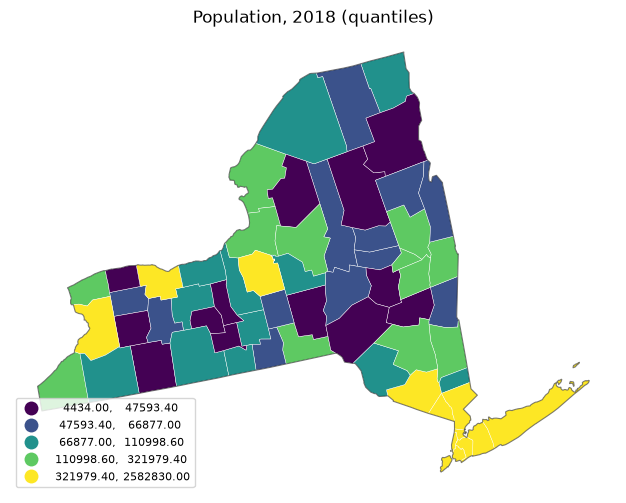
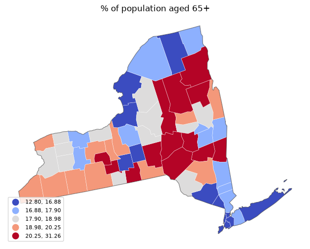
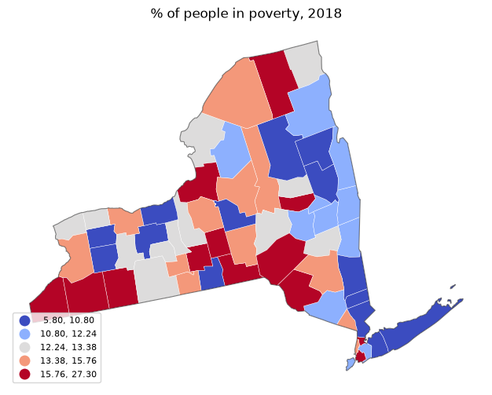
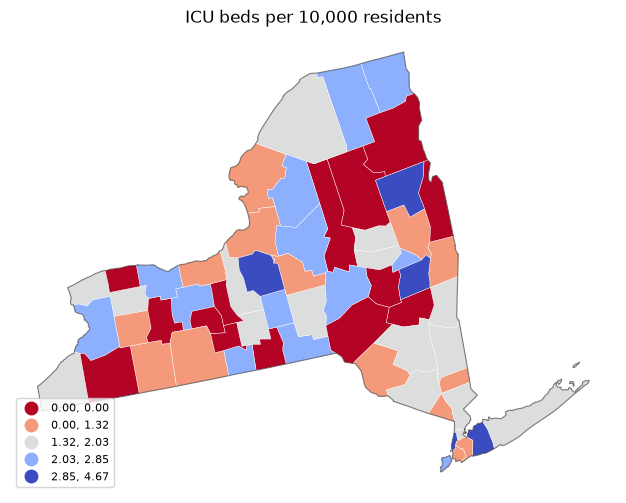

Suitability analysis asks where an activity or facility should go by evaluating locations against multiple criteria. This notebook introduces the New York rural clinic case study, loads county attributes and boundaries from data/MCSM_data, joins them on FIPS, reprojects to an equal-area CRS, and maps the raw variables.
Vector-based suitability analysis is a geospatial technique used to determine the most appropriate locations for a particular activity or facility by systematically evaluating spatial units, such as polygons representing parcels, counties, or other administrative boundaries, against multiple criteria. This process is crucial in spatial planning and decision support scenarios where the “best” location depends on several, often competing, factors.
In this approach, each spatial unit (e.g., a county polygon) is considered an alternative, while each spatial dataset or variable (represented as a map layer) is treated as a criterion to evaluate. This method is a spatial implementation of Multi-Criteria Decision Analysis (MCDA), which integrates multiple quantitative or qualitative criteria to provide an objective, reproducible ranking of locations.
The detailed workflow for vector-based suitability analysis typically includes:
Goal Definition and Spatial Units Selection: Clearly stating the objective (e.g., siting a new clinic) and specifying the spatial units of analysis (e.g., counties, zones, or parcels) that will be assessed for suitability.
Criteria Selection and Data Preparation: Identifying and collecting relevant spatial criteria as vector layers (such as population demographics, land use, access to services, etc.).
Criteria Derivation and Standardization: Processing and transforming criteria so that they are comparable, for example by reclassifying raw values into standard scores or normalizing data ranges.
Criteria Combination: Aggregating the standardized criteria for each spatial unit to compute an overall suitability score. This is commonly done using:
Boolean (categorical) methods: Where each location is assessed against fixed thresholds for all criteria; only those passing all conditions are deemed suitable.
Weighted scoring methods: Where criteria are assigned relative importance (weights), and a composite score is calculated for each location based on how well it meets each criterion.
Result Evaluation and Mapping: Interpreting, ranking, and visualizing the output by mapping suitability scores, identifying top-ranked sites, and possibly validating results with field data or expert input.
Within this notebook, the analysis focuses on polygon features (counties), utilizing geopandas for spatial operations and attribute analysis. In later, more advanced modules, the same concepts are extended to raster data, supporting additional techniques such as fuzzy logic, Analytic Hierarchy Process (AHP) weighting, and sensitivity analysis, culminating in robust site selection workflows.
Case study: where should a new rural health clinic go?
A regional health network in New York State wants to open a new primary-care and telehealth clinic. Planners want counties that:
#
Criterion
Rationale
Direction
1
Health-care need
Older and poorer populations use more primary care and face more access barriers
Higher is better
2
Hospital capacity gap
Counties with few ICU beds relative to the state average are underserved
Fewer beds per capita is better
3
Proximity to a referral hub
The clinic must refer complex cases to, and receive telehealth support from, an academic medical center
Closer is better
4
Rurality
The program targets non-metropolitan populations
More rural is better
This mirrors the logic of the original job-relocation example: an opportunity measure, a relative (location-quotient style) measure, an index derived from two variables, and distance to a set of important points.
Note: The data are real but several years old (about 2018), and the hub list is illustrative. The goal is to learn the methods, not to make an actual siting recommendation.
Installation. This notebook needs installation option 1 (vector, raster, CRS and visualization): pip install "geolattice[core]". See “Installation options” in the GeoLattice README.
Locate the GeoLattice repository root and point DATA_DIR at data/MCSM_data.
Code
# Display matplotlib figures inline in this Jupyter notebook.%matplotlib inline# Standard library imports for path setup and download helpers.import warnings # silence benign RuntimeWarnings during cleaningfrom pathlib import Path # filesystem paths for MCSM sample data# Third-party numeric / plotting stack used throughout this notebook.import matplotlib.pyplot as plt # figure and axes creation for choroplethsimport numpy as np # array ops kept available for later notebooks in the seriesimport pandas as pd # tabular county attribute table# The installed package lives in src/; the repository root is its parent.import geolatticeROOT = Path(geolattice.__file__).resolve().parents[1]ifnot (ROOT /"Data").is_dir():raiseFileNotFoundError("Could not find the GeoLattice repository root.")DATA_DIR = ROOT /"Data"/"03_spatial_analysis"/"MCSM_data"# shared MCSM sample-data folderDATA_DIR.mkdir(parents=True, exist_ok=True) # create it if missing (first run)warnings.filterwarnings("ignore", category=RuntimeWarning) # quiet divide-by-zero noisepd.set_option("display.width", 120) # wider DataFrame previews in the notebookplt.rcParams["figure.figsize"] = [9, 6] # default figure size for choropleths# I/O helpers for downloading county tables / GeoJSON once, then reading locally.import os # kept for environment compatibility with later cellsimport urllib.request # download remote CSV / GeoJSON when missing on diskimport geopandas as gpd # vector GeoDataFrames for county polygonsprint("pandas", pd.__version__, "| geopandas", gpd.__version__) # confirm library versions
pandas 3.0.3 | geopandas 1.1.4
Criteria data: county-level attribute table
The county summary table combines data from several federal sources. It includes one row per county, plus rows for each state and for the nation. Each row has a FIPS code, the federal identifier for states and counties:
State FIPS: 2 digits (New York = 36)
County FIPS: 5 digits = state code + 3-digit county code (Tompkins County, NY = 36109)
Rows whose code ends in 000 are state totals rather than counties.
The file is downloaded once and cached locally.
Code
# Remote URL for the US county-level summary CSV (COVID-era federal extracts).CSV_URL = ("https://raw.githubusercontent.com/JieYingWu/""COVID-19_US_County-level_Summaries/master/data/counties.csv") # source filecsv_path = DATA_DIR /"us_county_summaries.csv"# local cache under MCSM_data# Download once if the CSV is not already present locally.ifnot csv_path.is_file(): urllib.request.urlretrieve(CSV_URL, str(csv_path)) # download once, then read locallyraw = pd.read_csv(csv_path) # load the full multi-state county tableprint(raw.shape) # rows x columns of the raw tableraw.iloc[:5, :6] # preview the first five rows and six columns
(3273, 347)
FIPS
State
Area_Name
Rural-urban_Continuum Code_2013
Urban_Influence_Code_2013
Economic_typology_2015
0
0
US
United States
NaN
NaN
NaN
1
1000
AL
Alabama
NaN
NaN
NaN
2
1001
AL
Autauga County
2.0
2.0
0.0
3
1003
AL
Baldwin County
3.0
2.0
5.0
4
1005
AL
Barbour County
6.0
6.0
3.0
Subsetting and cleaning
The table has more than 300 columns. Only a few are needed:
Original column
New name
Meaning
POP_ESTIMATE_2018
pop
Total population, 2018 estimate
Total_age65plus
pop65
Population aged 65 and over
PCTPOVALL_2018
poverty_pct
% of people in poverty, 2018
ICU Beds
icu_beds
Staffed ICU beds (KHN hospital data)
Rural-urban_Continuum Code_2013
rucc
USDA rural-urban continuum code (1 = large metro … 9 = remote rural)
Steps:
Keep New York counties and drop the state-total row.
Build a zero-padded, 5-digit text GEOID, because codes stored as integers lose leading zeros (1001 should be 01001).
Select and rename columns.
Coerce the values to numeric and check for missing data.
Code
# Keep only New York counties and rename a few columns for readability.STATE ="NY"# two-letter postal abbreviation used in the State column# Map original federal column names to short analysis-friendly names.cols = {"Area_Name": "county", # county name"State": "state", # state abbreviation"POP_ESTIMATE_2018": "pop", # total population, 2018"Total_age65plus": "pop65", # population aged 65+"PCTPOVALL_2018": "poverty_pct", # percent of people in poverty, 2018"ICU Beds": "icu_beds", # count of ICU beds"Rural-urban_Continuum Code_2013": "rucc", # USDA rurality code 1-9}# Drop state/national aggregate rows (FIPS ending in 000) and keep NY only.ny = raw[(raw["State"] == STATE) & (raw["FIPS"] %1000!=0)].copy() # county rows onlyny["GEOID"] = ny["FIPS"].astype(int).astype(str).str.zfill(5) # 5-digit FIPS as join keyny = ny[["GEOID"] +list(cols)].rename(columns=cols) # keep GEOID + renamed criteria cols# Coerce numeric columns so later ratios and joins do not treat them as strings.for col in ["pop", "pop65", "poverty_pct", "icu_beds", "rucc"]: ny[col] = pd.to_numeric(ny[col], errors="coerce") # invalid values become NaNprint(len(ny), "counties") # expect 62 for New Yorkprint(ny.isna().sum()) # missing-value counts per columnny.head() # preview the cleaned attribute table
62 counties
GEOID 0
county 0
state 0
pop 0
pop65 0
poverty_pct 0
icu_beds 0
rucc 0
dtype: int64
GEOID
county
state
pop
pop65
poverty_pct
icu_beds
rucc
1862
36001
Albany County
NY
307117
52073.0
11.3
120.0
2.0
1863
36003
Allegany County
NY
46430
8815.0
17.0
6.0
7.0
1864
36005
Bronx County
NY
1432132
183375.0
27.3
270.0
1.0
1865
36007
Broome County
NY
191659
36542.0
17.3
47.0
2.0
1866
36009
Cattaraugus County
NY
76840
14729.0
17.1
0.0
4.0
All 62 New York counties are present with no missing values. A quick sort shows the largest and smallest counties by population. Checking extremes like this is a useful first sanity check on any criteria table.
Code
# Show the five most populous NY counties with ICU beds and RUCC.ny.sort_values("pop", ascending=False)[["county", "pop", "icu_beds", "rucc"]].head() # largest first
county
pop
icu_beds
rucc
1885
Kings County
2582830
318.0
1.0
1902
Queens County
2278906
129.0
1.0
1892
New York County
1628701
761.0
1.0
1913
Suffolk County
1481093
281.0
1.0
1864
Bronx County
1432132
270.0
1.0
Code
# Show the five least populous NY counties with ICU beds and RUCC.ny.sort_values("pop")[["county", "pop", "icu_beds", "rucc"]].head() # smallest first
county
pop
icu_beds
rucc
1882
Hamilton County
4434
0.0
8.0
1910
Schuyler County
17912
0.0
6.0
1923
Yates County
24841
0.0
1.0
1886
Lewis County
26447
6.0
6.0
1909
Schoharie County
31097
0.0
2.0
Several small counties have zero ICU beds. This matters later, because zero is a meaningful value, not missing data.
County boundary polygons
The attribute table has no geometry. Mapping it requires a polygon layer that shares the same key. The Plotly GeoJSON stores the 5-digit FIPS code in its id field, and its coordinates are longitude/latitude (EPSG:4326).
Code
# Remote URL for Plotly's US counties GeoJSON (FIPS id + polygon geometry).GEO_URL = ("https://raw.githubusercontent.com/plotly/datasets/""master/geojson-counties-fips.json") # national county polygonsgeo_path = DATA_DIR /"us_counties.geojson"# local GeoJSON cache# Download once if the GeoJSON is not already present locally.ifnot geo_path.is_file(): urllib.request.urlretrieve(GEO_URL, str(geo_path)) # download once, then read locallyus_counties = gpd.read_file(geo_path) # load national county polygons as a GeoDataFrameprint(us_counties.crs, len(us_counties)) # CRS and feature countus_counties.head(3) # preview id / STATE / geometry columns
EPSG:4326 3221
id
GEO_ID
STATE
COUNTY
NAME
LSAD
CENSUSAREA
geometry
0
01001
0500000US01001
01
001
Autauga
County
594.436
POLYGON ((-86.49677 32.34444, -86.7179 32.4028...
1
01009
0500000US01009
01
009
Blount
County
644.776
POLYGON ((-86.5778 33.76532, -86.75914 33.8406...
2
01017
0500000US01017
01
017
Chambers
County
596.531
POLYGON ((-85.18413 32.87052, -85.12342 32.772...
Attribute join
An attribute join links two tables through a shared key. Here, the key is id in the polygons and GEOID in the table. The polygons go on the left side of merge() so the result stays a GeoDataFrame.
After any join, compare row counts. A drop in rows means some keys failed to match.
Code
# Keep New York polygons (STATE FIPS 36) and join the cleaned attribute table.ny_poly = us_counties[us_counties["STATE"] =="36"][["id", "geometry"]] # NY polygons + FIPS id# Inner-join polygons (left) to attributes (right) on the shared 5-digit FIPS key.counties = ny_poly.merge(ny, left_on="id", right_on="GEOID", how="inner").drop(columns="id") # joined GDFprint("polygons:", len(ny_poly), "| table rows:", len(ny), "| joined:", len(counties)) # join QAtype(counties) # confirm result is still a GeoDataFrame
polygons: 62 | table rows: 62 | joined: 62
geopandas.geodataframe.GeoDataFrame
Reprojection
Latitude/longitude degrees are not suitable for measuring distance or area. The data are reprojected to NAD83 / Conus Albers Equal Area (EPSG:5070), an equal-area projection in meters used by many US federal datasets. Distances computed in Module 2 depend on this step.
A state outline is also created by dissolving the counties, which merges their polygons into one.
Code
# Reproject counties to NAD83 / Conus Albers Equal Area for area-safe maps.counties = counties.to_crs("EPSG:5070") # metres, equal-area CONUS Albersstate = counties.dissolve()[["geometry"]] # dissolved state outline for map bordersprint(counties.crs) # confirm EPSG:5070print("Mapped area (km²):", round(counties.area.sum() /1e6)) # total area in square kilometres
EPSG:5070
Mapped area (km²): 127049
Mapping the raw variables
The following helper function draws a consistent choropleth with a state outline. It is redefined in each module so every notebook runs on its own.
Classification schemes affect how a map reads:
Quantiles put an equal number of counties in each class, which is good for showing relative position.
Natural breaks (Jenks) place class breaks at gaps in the data, which is good for skewed distributions.
Code
# Helper: draw a consistent county choropleth with a state outline overlay.def choropleth(gdf, column, title, cmap="coolwarm", scheme="quantiles", k=5, **kw):# Plot the chosen attribute with a classified colour scheme and thin white edges. ax = gdf.plot(column, cmap=cmap, scheme=scheme, k=k, legend=True, edgecolor="white", linewidth=0.3, # county boundaries legend_kwds={"loc": "lower left", "fontsize": 8}, **kw) # legend placement state.boundary.plot(ax=ax, color="#00000080", linewidth=0.8) # semi-transparent state border ax.set_title(title) # map title ax.set_axis_off() # hide axis ticks for a cleaner cartographic lookreturn ax # return axes for further annotation if needed
Code
# Map 2018 population with quantile classification and a viridis colormap.choropleth(counties, "pop", "Population, 2018 (quantiles)", cmap="viridis") # population choroplethplt.show() # render the figure

Code
# Derive percent of population aged 65+ and map it.counties["pct65"] =100* counties["pop65"] / counties["pop"] # elderly share (%)choropleth(counties, "pct65", "% of population aged 65+", cmap="coolwarm") # elderly-share mapplt.show() # render the figure

Code
# Map 2018 poverty rate with the default coolwarm colormap.choropleth(counties, "poverty_pct", "% of people in poverty, 2018", cmap="coolwarm") # poverty mapplt.show() # render the figure

Code
# Derive ICU beds per 10,000 residents and map with natural breaks.counties["icu_per_10k"] =10_000* counties["icu_beds"] / counties["pop"] # capacity rate# Map ICU capacity with reversed coolwarm so low capacity reads as warm colours.choropleth(counties, "icu_per_10k", "ICU beds per 10,000 residents", cmap="coolwarm_r", scheme="naturalbreaks") # natural breaks classificationplt.show() # render the figure

The rural-urban continuum code is an ordinal categorical variable, so it is mapped with a categorical legend instead of a classification scheme.
The oldest populations are in the Adirondacks and North Country (Hamilton, Essex) and in the Catskills and upper Hudson Valley (Delaware, Columbia, Greene).
Poverty is highest in the Bronx and Brooklyn, and in the western Southern Tier (Chautauqua, Cattaraugus, Allegany) and Broome County.
ICU capacity is concentrated in Manhattan and in the regional centers of Albany, Syracuse, Buffalo, and Long Island, with Warren County (Glens Falls) as a smaller hub.
The most rural counties (RUCC 6 and above) are scattered across the Southern Tier, the North Country, and the Catskills.
These patterns already suggest where the criteria will agree and where they will conflict.
Save the cleaned layer
A GeoPackage (.gpkg) is an open, single-file format that stores geometry, attributes, and the CRS together. Module 2 starts from this file.
Code
# Persist the cleaned county GeoDataFrame and dissolved state outline to GeoPackage.out = DATA_DIR /"ny_counties.gpkg"# shared output used by later MCSM notebookscounties.to_file(str(out), layer="counties", driver="GPKG") # write county polygons + attributesstate.to_file(str(out), layer="state", driver="GPKG") # write dissolved state outline layerprint("Saved:", out) # confirm output pathcounties.drop(columns="geometry").head() # preview attribute columns without geometry